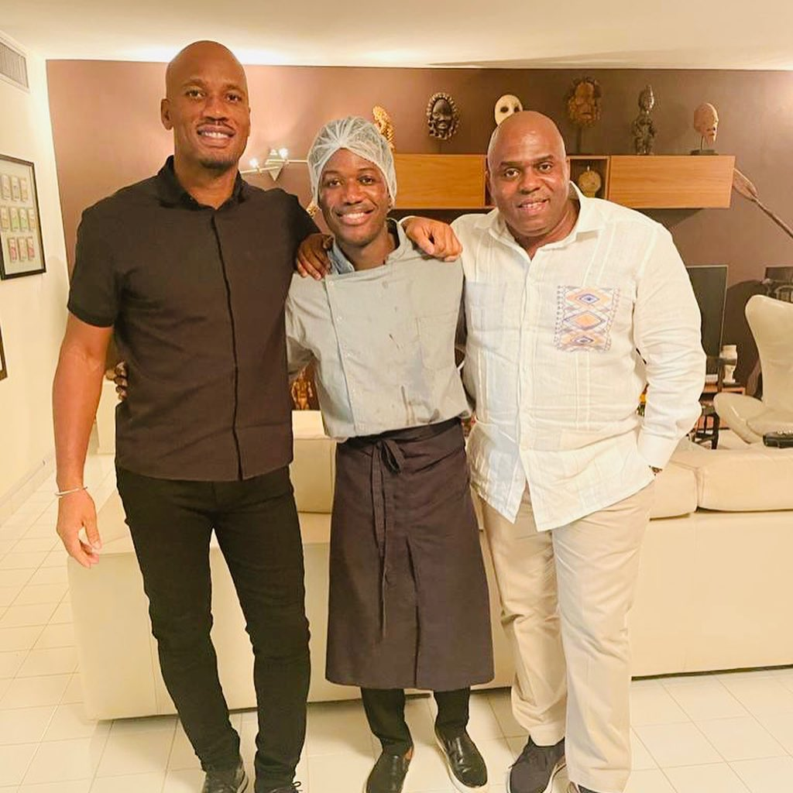
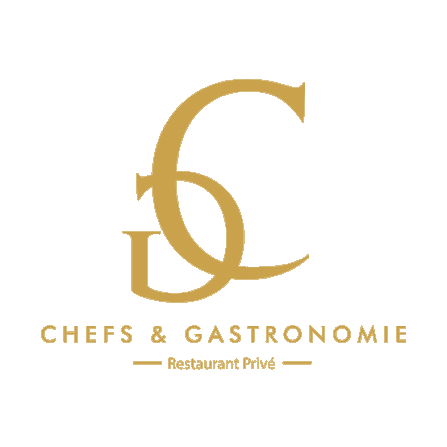
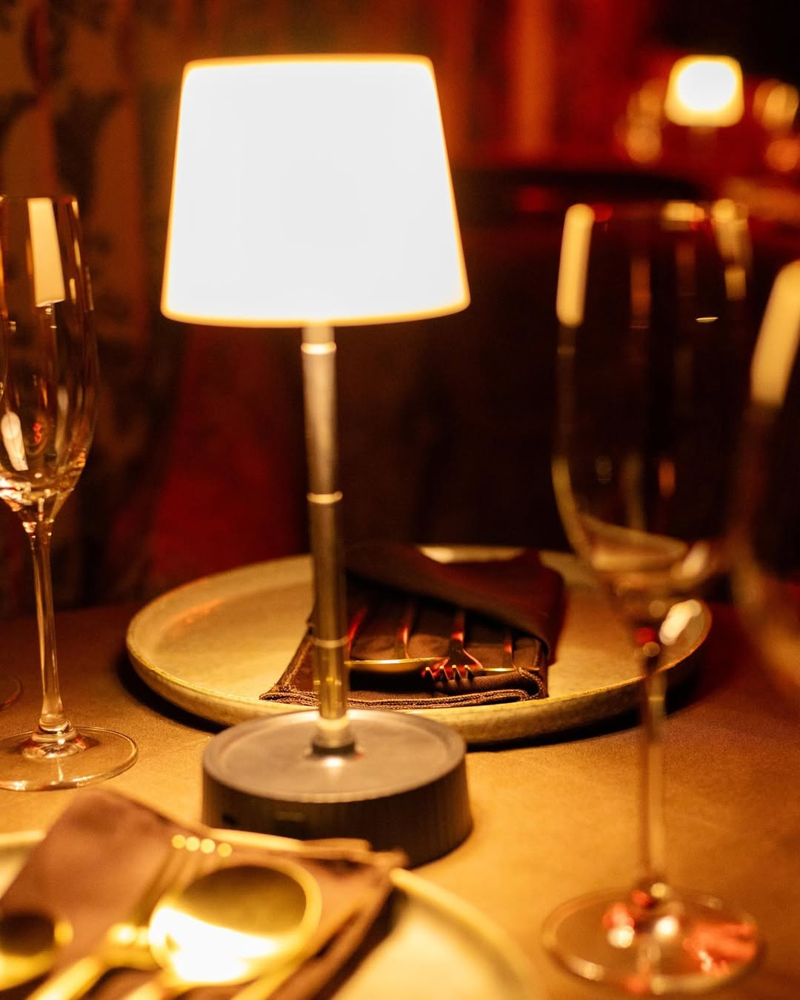
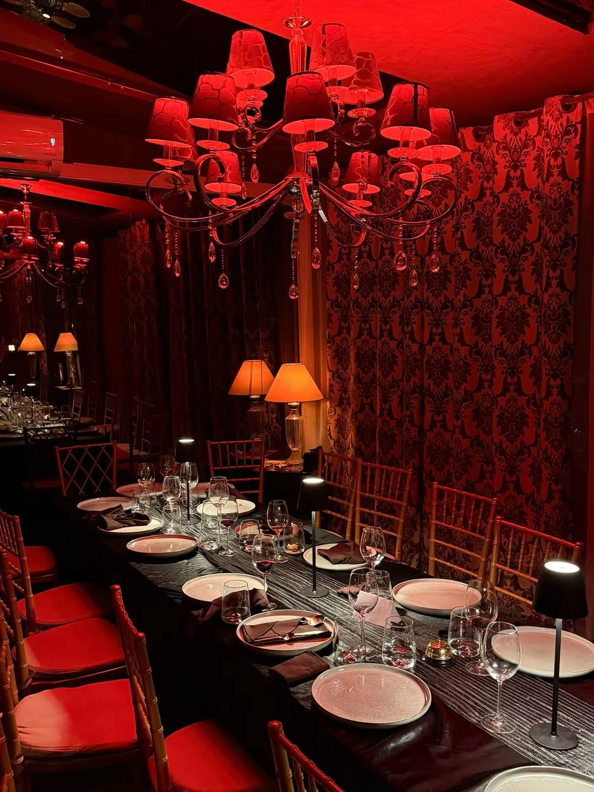
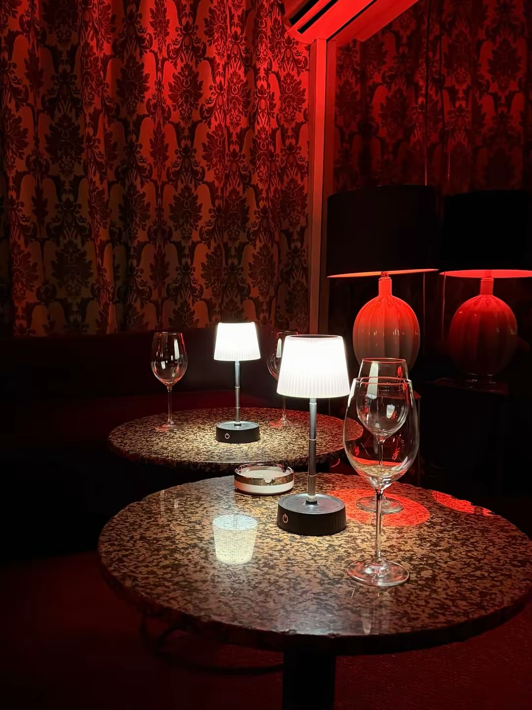
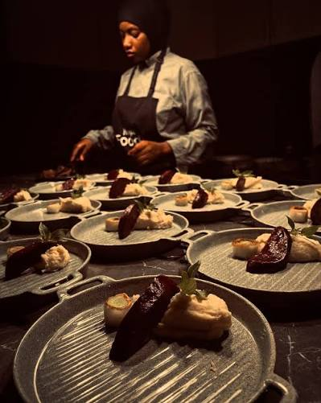
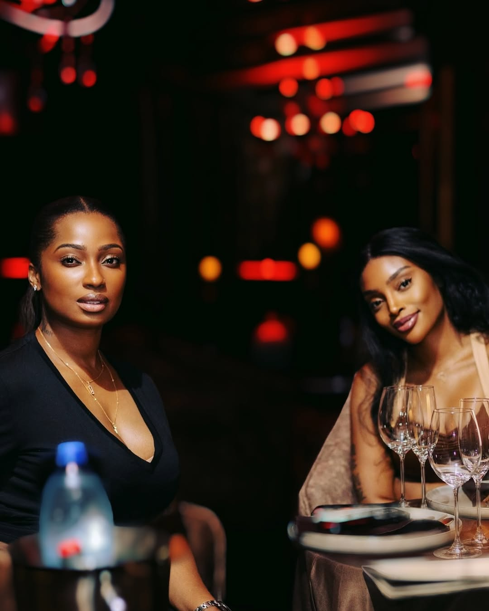
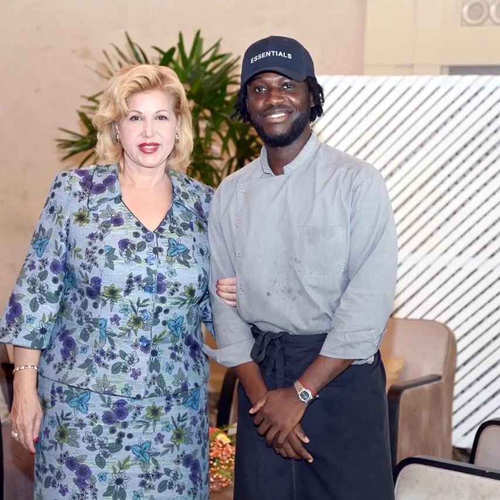

Didier Drogba
La légende nationale, reçue par Chef Dady.


RéserverAbidjan — Expérience Gastronomique Privée
Pas de carte. Pas de certitudes.
Un voyage culinaire qui se découvre, assiette après assiette.
Ici, pas de carte. Vous ne savez pas ce que vous allez déguster — jusqu'à ce que l'assiette se pose devant vous. À chaque service, le Chef vous raconte la création, son histoire, ses saveurs. Puis vous goûtez, et le voyage commence.
Les dégustations s'enchaînent comme autant d'escales : un mélange de saveurs, une surprise, une explosion. Une véritable expérience culinaire, où le temps file sans que l'on s'en aperçoive.

« Ici, on ne lit pas le menu —
on le découvre, bouchée après bouchée. »
Velours profond, chandeliers et lumière de braise. Une ambiance feutrée et confidentielle, un cocon privé où l'on se pose et où l'on se détend — le cadre idéal pour se laisser porter.




Chaque plat,
une nouvelle escale.
Des légendes du sport aux figures de la nation, Chefs & Gastronomie est le rendez-vous discret de celles et ceux qui exigent l'excellence.

La légende nationale, reçue par Chef Dady.

La cuisine à la rencontre de l'élégance de la Première Dame.
Une allergie, un interdit, un produit que vous n'aimez pas ? Tout se personnalise. Avant de commencer, on prend le temps de vous connaître — pour que chaque assiette soit pensée pour vous, en toute sécurité.
Le Chef vous accompagne à chaque étape : il décrit chaque création, ajuste selon vos envies, et veille à ce que la surprise reste toujours un plaisir. Vous n'avez qu'une chose à faire — vous laisser porter.
« Votre seul rôle : en profiter. »
Réserver l'expérienceLes lumières se tamisent, le temps se suspend.
Ne reste que le plaisir de l'instant.
Pas de carte à choisir, juste une expérience à vivre.
Sur réservation uniquement — dites-nous vos envies et vos contraintes, le Chef s'occupe du reste.